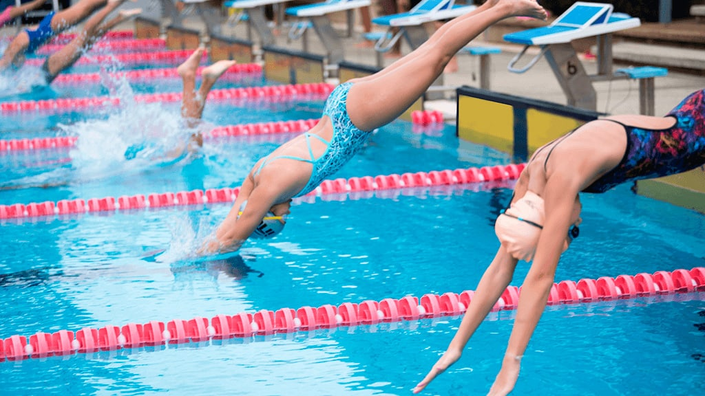

Modalidade esportiva
Natação
A natação é praticada desde a Antiguidade, mas se tornou um esporte organizado sobretudo no século XIX. Ela está no programa dos Jogos Olímpicos modernos desde a primeira edição, em Atenas, em 1896.

Modalidade esportiva
A natação é praticada desde a Antiguidade, mas se tornou um esporte organizado sobretudo no século XIX. Ela está no programa dos Jogos Olímpicos modernos desde a primeira edição, em Atenas, em 1896.